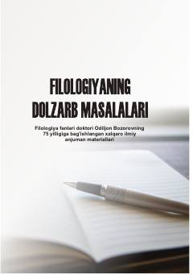

FDFilologiya fanining dolzarb masalalariga bag'ishlangan xalqaro ilmiy maqolalar to'plami.
Mazkur to'plam taniqli tilshunos olim Odiljon Bozorovning 75 yilligiga bag'ishlangan xalqaro ilmiy anjuman materiallarini o'z ichiga oladi. Unda o'zbek, ingliz, rus va turk filologiyasi hamda uning o'qitish metodikasiga oid dolzarb ilmiy-uslubiy maqolalar jamlangan.